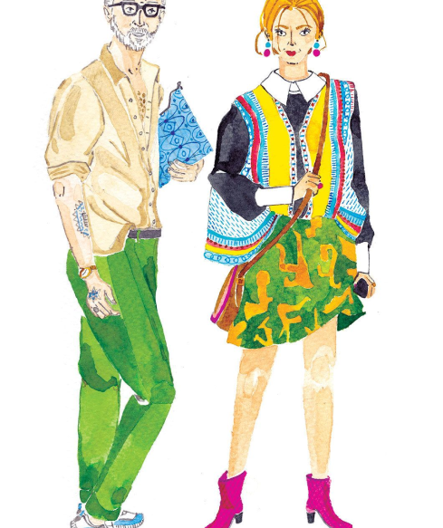

Emily Robertson
There is an inherent joy in the sweet, ink and water colour work of Glasgow School of Art graduate, Emily Robertson. Mix that with her impressive ability to capture the smallest of details with the slightest flicks of her brush and you’ve got someone who can capture a mood, a style and the true character of her subject with a signature flair.
From juicy pastries and cosmetics to maps and stylish portraits of butchers, Emily’s eye for colour and texture is remarkable, and very popular among her clients, including: Anthropologie, Chanel, Faber&Faber, Marks and Spencer, National Trust, Pentagram NY and Port magazine.